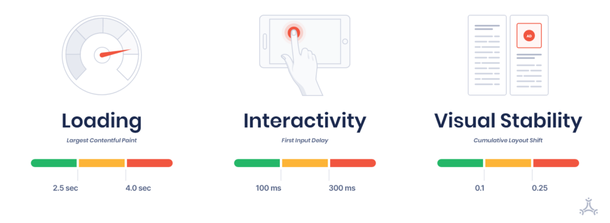

Core Web Vitals
Wydajność stron internetowych
Travcorp Poland
Szymon Gałązka | Frontend Tech Lead
Co to jest Core Web Vitals?
zacznijmy od początku...
zaczęło się od pozycjonowania stron w latach 90...
silniki wyszukiwania zaczęły posługiwać się botami do przeszukania Internetu...
...w oparciu o słowa-klucze znalezione na stronach.
I wszystko byłoby w porządku...
...gdyby nie...
...ludzka pomysłowość
Core Web Vitals!
(a właściwie Web Vitals)
Metryki Web Vitals
- LCP - Largest Contentful Paint
- FID - First Input Delay
- CLS - Cumulative Layout Shift
- FCP - First Contentful Paint
- TBT - Total Blocking Time
- TTI - Time To Interactive
- TTFB - Time To First Byte
LCP - Largest Contentful Paint
Metryka szybkości ładowania
LCP - Largest Contentful Paint
Metryka szybkości ładowania

Example #1

Example #2

Example #3

Example #4

CLS - Cumulative Layout Shift
Metryka stabilności wizualnej
CLS - Cumulative Layout Shift
Metryka stabilności wizualnej

layout shift = impact fraction * distance fraction
Impact fraction (obszar)

Distance fraction (dystans)

Przykład

FID - First Input Delay
Metryka interaktywności
FID - First Input Delay
Metryka interaktywności
⬇
TBT - Total Blocking Time
Metryka responsywności
Total Blocking Time
Łączne wykonanie skryptów na głównym wątku przeglądarki, trwających dłuzej niz 50ms

Total Blocking Time
Skumulowany czas wykonania zadań na głównym wątku przeglądarki, trwających dłuzej niz 50ms
Total Blocking Time
| Czas trwania zadania | Blokujący czas | |
|---|---|---|
| Zadanie 1 | 250 ms | 200 ms |
| Zadanie 2 | 90 ms | 40 ms |
| Zadanie 3 | 35 ms | 0 ms |
| Zadanie 5 | 155 ms | 105 ms |
| Łączny czas blokowania głównego wątku: 345 ms | ||